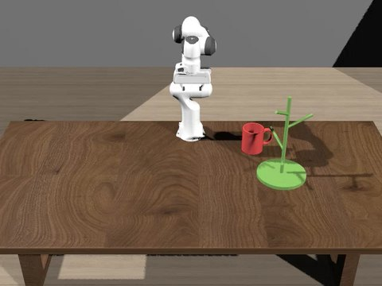

Finding 1
No method dominates
Different methods excel on different task suites
 1National University of Singapore
1National University of Singapore 3University of Toronto
3University of Toronto 4Huazhong University of Science and Technology
4Huazhong University of Science and Technology 6KTH Royal Institute of Technology
6KTH Royal Institute of Technology 7Shanghai Jiao Tong University
7Shanghai Jiao Tong University 8Peking University
8Peking UniversityManiLadder is a difficulty-calibrated simulation benchmark for robot manipulation.
Task difficulty level is objectively anchored by the success rate of the same policy (a 50M flow matching imitation learning policy) trained on the same number of demonstrations with the same training budget.



Target L2 Level 2Outside the range: change the design (initial randomization, error tolerance, object geometry, task horizon) and repeat.
In each task suite, we design 4 manipulation skills for rigid body tasks and 3 different object properties for deformable object tasks.
4 tasks, 4 different skills
3 tasks, 3 object dimensions
We tested four policies on ManiLadder. Each policy learns from the same 20 demonstrations per task and is evaluated with 50 rollouts per task.
A flow-matching imitation learning policy with 50M parameters: a frozen RADIO visual encoder for the multi-view RGB images and a transformer encoder-decoder that denoises action chunks. One policy per task, trained for 40k steps with a batch size of 256; the best checkpoint is reported. This is also the reference policy that calibrates the levels.
A large pre-trained flow-matching vision-language-action model. The pi05_base checkpoint is fine-tuned with LoRA, one model per task; the best checkpoint is reported.
An agentic script policy. GPT-6 Astra Medium works as a task-specific coding agent: it reads the RGB observations, proprioception and actions of the demonstrations, writes an executable Python policy, and refines it over up to 20 exploration episodes. The controller is then frozen for evaluation.
The same π0.5 model with LoRA, trained as one policy per difficulty level: jointly on all 28 tasks of the level for 80k steps, then evaluated on that level. The final checkpoint is reported.
We define Attained Level (AL) to measure how far up the ladder a policy gets. It is the highest difficulty level at which the policy succeeds on enough of the tasks, at that level and at every level below it.
Let p̂m(T) be the success rate of policy m on task T. We define the τ-coverage of a given level k:
The Attained Level of policy m is then:
Each level has 28 tasks, so a level needs 23 of them. AL = 0 means that Level 1 is not attained. We report two versions, which differ only in τ.
The success rate of the three single-task policies on each of the 112 tasks, over 50 test episodes. Tasks are grouped by level, then object type, then embodiment. Hover a task for exact numbers, and click it to watch it.
No task matches these filters.
Different methods excel on different task suites
π0.5 trained on one task set, then fine-tuned on another
π0.5, one policy per task (ST) vs. one for the whole benchmark (MT-A)
π0.5 on the 16 Level-2 rigid-body tasks, 20 to 200 demos per task
8 tasks rebuilt on a real xArm, 50 trials each, next to their simulated twins
@article{gao2026maniladder,
title = {ManiLadder: Benchmarking Robot Manipulation Through a
Categorized and Multi-Difficulty Level Task Ladder},
author = {Gao, Chongkai and Shi, Jieao and Mu, Zhaoyu and Lin, Yudi and Liu, Xuanwei and
Ng, Wei Ken and Cheng, Baiye and Chen, Anqi and Liu, Kerun and Li, Zhuoran and
Huang, Xuchuan and Li, Haoyang and Zhu, Shengjia and Chan, Nga Teng and
Zhang, Yuxuan and Chen, Xingyu and Shao, Lin},
journal = {arXiv preprint arXiv:2611.16374},
year = {2026}
}